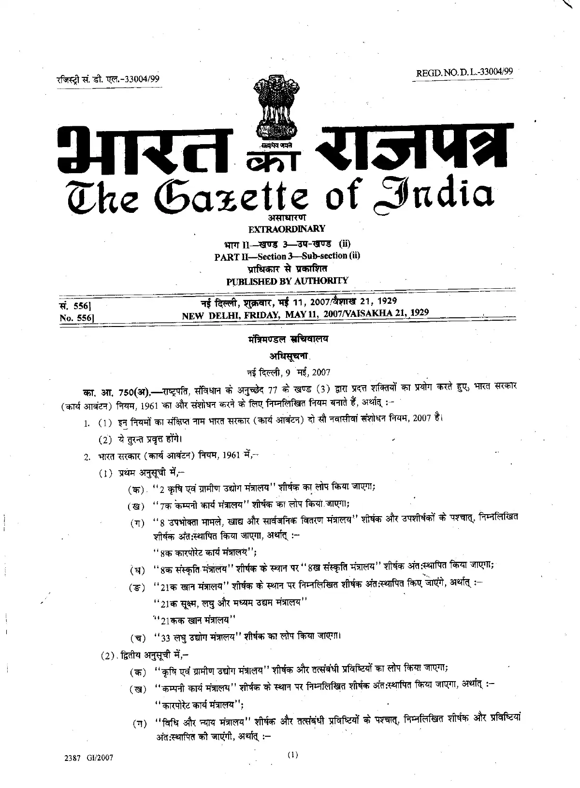
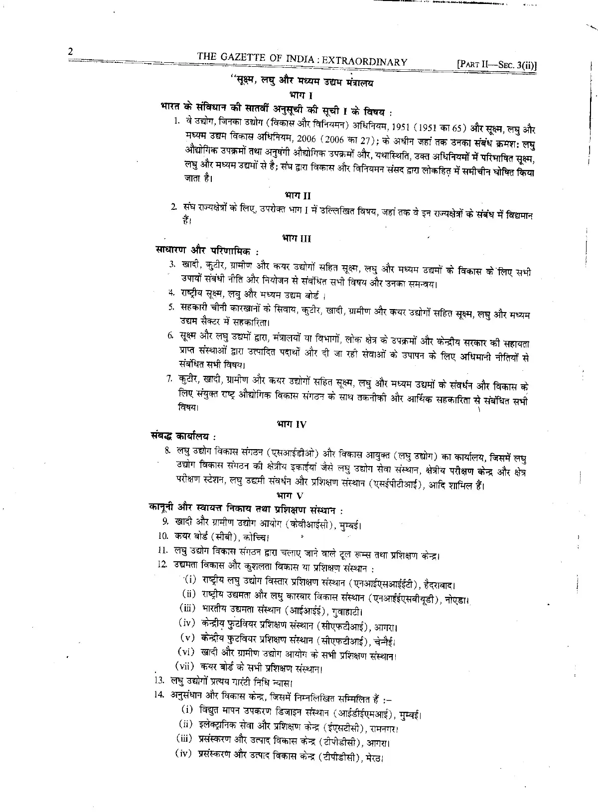
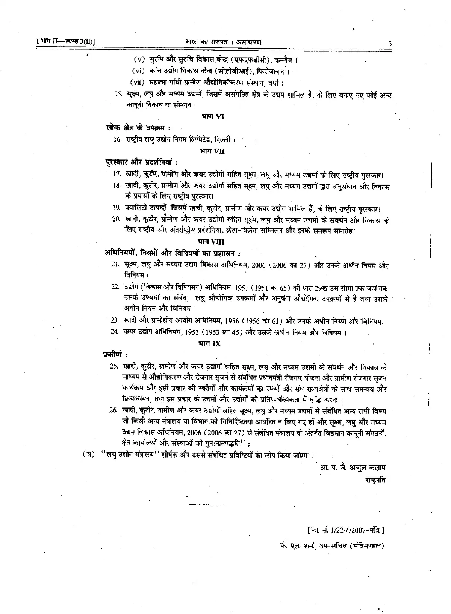
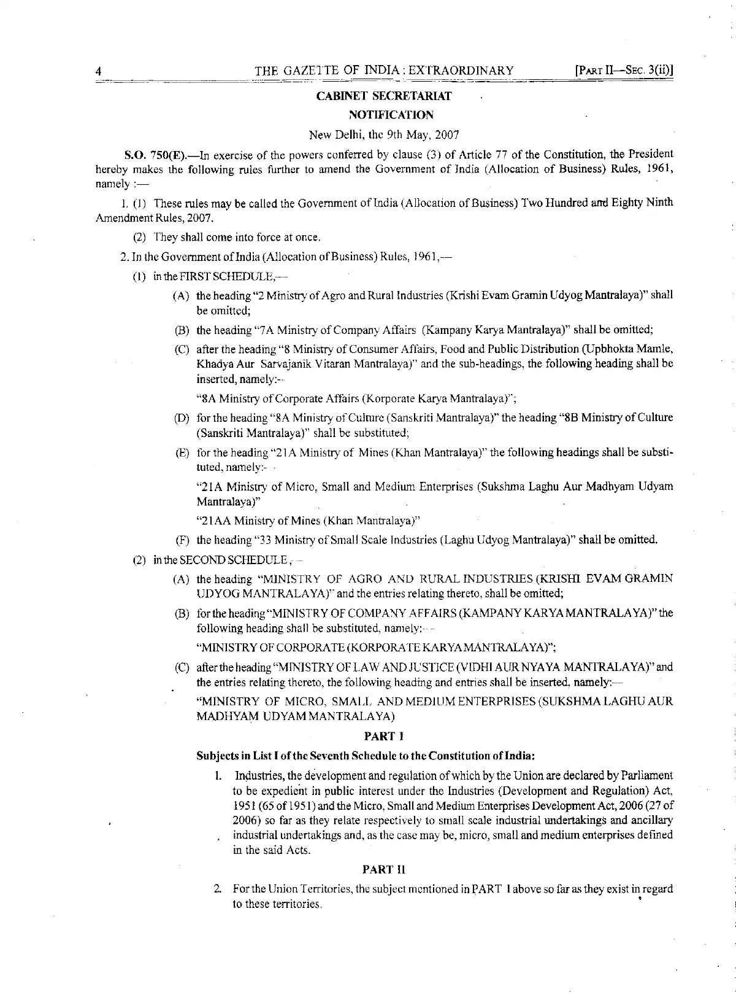
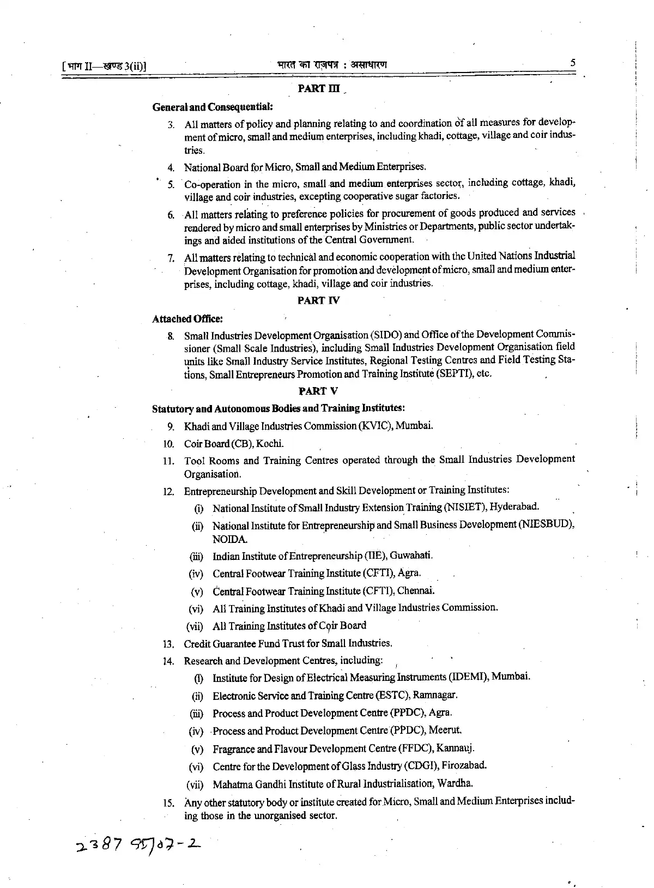
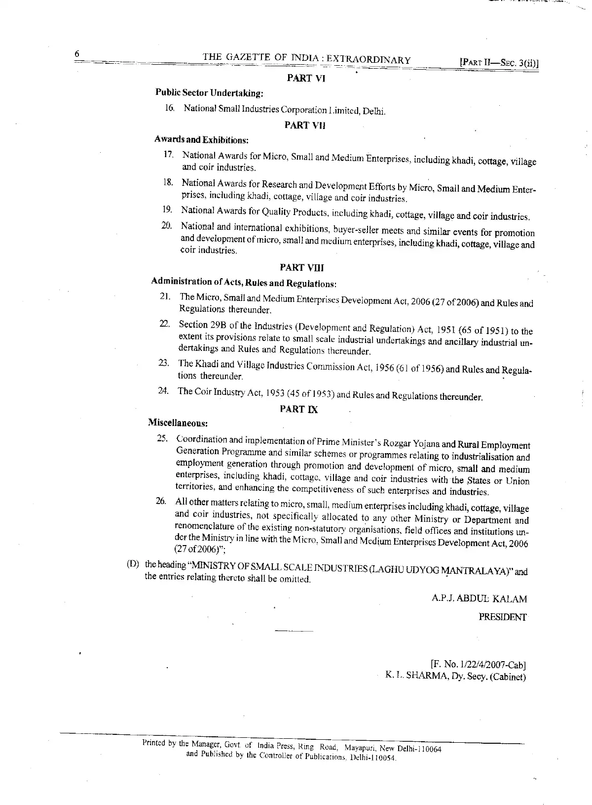

Amendment #289 (S.O. 750(E), 2007)
10 changes: 6 to the First Schedule, 4 to the Second Schedule. 10 applied
What it did to the ministries
- endedMinistry of Small Scale Industries is abolished change 6 · histories: Small Scale Industries
- bornMinistry of Micro, Small and Medium Enterprises is created (26 subjects) change 5, 9 · histories: MSME
- absorbedMinistry of Agro and Rural Industries joins Ministry of Micro, Small and Medium Enterprises (3 subjects) change 1, 5, 7, 9 · histories: Agro and Rural Industries, MSME
- renamedMinistry of Company Affairs is renamed Ministry of Corporate Affairs change 2, 3, 4, 8 · histories: Corporate Affairs
The order, page by page
Page 1 of 6

Page 2 of 6

Page 3 of 6

Page 4 of 6

123456789Schedule 1 › Ministry of Agro and Rural Industries
applied at schedule 1 › ministry 2 in the Rules after #289
Schedule 1 › Ministry of Company Affairs
applied at schedule 1 › ministry 7A in the Rules after #289
after Schedule 1 › Ministry of Consumer Affairs, Food and Public Distribution
- 8A. Ministry of Corporate Affairs
applied at schedule 1 › ministry 8A in the Rules after #289
Schedule 1 › Ministry of Culture
- 8B. Ministry of Culture
applied at schedule 1 › ministry 8B in the Rules after #289
Schedule 1 › Ministry of Mines
- 21A. Ministry of Micro, Small and Medium Enterprises
- 21AA. Ministry of Mines
applied at schedule 1 › ministry 21A in the Rules after #289
Schedule 1 › Ministry of Small Scale Industries
applied at schedule 1 › ministry 34 in the Rules after #289
Schedule 2 › MINISTRY OF AGRO AND RURAL INDUSTRIES
applied at schedule 2 › ministry in the Rules after #289
Schedule 2 › MINISTRY OF COMPANY AFFAIRS
- MINISTRY OF CORPORATE
applied at schedule 2 › ministry MINISTRY OF CORPORATE in the Rules after #289
after Schedule 2 › MINISTRY OF LAW AND JUSTICE
- MINISTRY OF MICRO, SMALL AND MEDIUM ENTERPRISES
- I. PART I
- 1. Industries, the development and regulation of which by the Union are declared by Parliament to be expedient in public interest under the Industries (Development and Regulation) Act 1951 (65 of 1951) and the Micro, Small and Medium Enterprises Development Act, 2006 (27 of 2006) so far as they…
- II. PART II
- 2. For the Union Territories, the subject mentioned in PART 1 above so far as they exist in regard to these territories.
- III. PART III
and 42 more
- 3. All matters of policy and planning relating to and coordination of all measures for development of micro, small and medium enterprises, including khadi, cottage, village and coir industries.
- 4. National Board for Micro, Small and Medium Enterprises.
- 5. Co-operation in the micro, small and medium enterprises sector, including cottage, khadi village and coir industries, excepting cooperative sugar factories.
- 6. All matters relating to preference policies for procurement of goods produced and services. rendered by micro and small enterprises by Ministries or Departments, public sector undertakings and aided institutions of the Central Government.
- 7. All matters relating to technical and economic cooperation with the United Nations Industrial Development Organisation for promotion and development of micro, small and medium enterprises, including cottage, khadi, village and coir industries.
- IV. PART IV
- 8. Small Industries Development Organisation (SIDO) and Office of the Development Commissioner (Small Scale Industries), including Small Industries Development Organisation field units like Small Industry Service Institutes, Regional Testing Centres and Field Testing Stations, Small Entrepreneurs…
- V. PART V
- 9. Khadi and Village Industries Commission (KVIC), Mumbai.
- 10. Coir Board (CB), Kochi.
- 11. Tool Rooms and Training Centres operated through the Small Industries Development Organisation.
- 12. Entrepreneurship Development and Skill Development or Training Institutes:
- i. National Institute of Small Industry Extension Training (NISIET), Hyderabad.
- ii. National Institute for Entrepreneurship and Small Business Development (NIESBUD) NOIDA.
- iii. Indian Institute of Entrepreneurship (IIE), Guwahati.
- iv. Central Footwear Training Institute (CFTI), Agra.
- v. Central Footwear Training Institute (CFTI), Chennai.
- vi. All Training Institutes of Khadi and Village Industries Commission.
- vii. All Training Institutes of Coir Board
- 13. Credit Guarantee Fund Trust for Small Industries.
- 14. Research and Development Centres, including: 1 (1) Institute for Design of Electrical Measuring Instruments (IDEMI), Mumbai.
- ii. Electronic Service and Training Centre (ESTC), Ramnagar.
- iii. Process and Product Development Centre (PPDC), Agra.
- iv. Process and Product Development Centre (PPDC), Meerut.
- v. Fragrance and Flavour Development Centre (FFDC), Kannauj.
- vi. Centre for the Development of Glass Industry (CDGI), Firozabad.
- vii. Mahatma Gandhi Institute of Rural Industrialisation, Wardha.
- 15. Any other statutory body or institute created for Micro, Small and Medium Enterprises including those in the unorganised sector. 238795/07-2
- VI. PART VI
- 16. National Small Industries Corporation Limited, Delhi.
- VII. PART VII
- 17. National Awards for Micro, Small and Medium Enterprises, including khadi, cottage, village and coir industries.
- 18. National Awards for Research and Development Efforts by Micro, Small and Medium Enterprises, including khadi, cottage, village and coir industries.
- 19. National Awards for Quality Products, including khadi, cottage, village and coir industries.
- 20. National and international exhibitions, buyer-seller meets and similar events for promotion and development of micro, small and medium enterprises, including khadi, cottage, village and coir industries. PART VIHI Administration of Acts, Rules and Regulations:
- 21. The Micro, Small and Medium Enterprises Development Act, 2006 (27 of 2006) and Rules and Regulations thereunder.
- 22. Section 29B of the Industries (Development and Regulation) Act, 1951 (65 of 1951) to the extent its provisions relate to small scale industrial undertakings and ancillary industrial undertakings and Rules and Regulations thereunder.
- 23. The Khadi and Village Industries Commission Act, 1956 (61 of 1956) and Rules and Regulations thereunder.
- 24. The Coir Industry Act, 1953 (45 of 1953) and Rules and Regulations thereunder.
- IX. PART IX
- 25. Coordination and implementation of Prime Minister's Rozgar Yojana and Rural Employment Generation Programme and similar schemes or programmes relating to industrialisation and employment generation through promotion and development of micro, small and medium enterprises, including khadi, cottage,…
- 26. All other matters relating to micro, small, medium enterprises including khadi, cottage, village and coir industries, not specifically allocated to any other Ministry or Department and renomenclature of the existing non-statutory organisations, field offices and institutions under the Ministry in…
applied at schedule 2 › ministry MINISTRY OF MICRO, SMALL AND MEDIUM ENTERPRISES in the Rules after #289
read page break
Page 5 of 6

Page 6 of 6

10Schedule 2 › MINISTRY OF SMALL SCALE INDUSTRIES
applied at schedule 2 › ministry in the Rules after #289
How this document was read
From the Government of India (Allocation of Business) Rules, 1961 and their amendments, as published by the Cabinet Secretariat (cabsec.gov.in), read by orgpedia. The readings of the older scanned gazettes have known gaps.